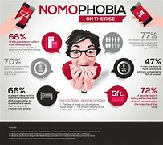
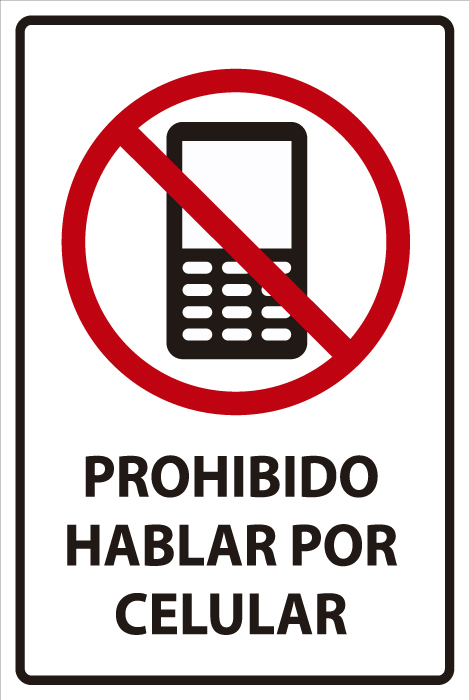
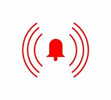

CAUSAS Y PERFIL DE LAS PERSONAS NOMOFÓBICAS.
Entre las causas más reconocidas de la adicción al telefono se encuentran la baja autoestima y los problemas a la hora de mantener relaciones sociales. De hecho, la inseguridad personal es el factor más común que provoca la nomofobia, ya que muchos jóvenes desencadenan una dependencia absoluta hacia los demás y encuentran en el telefono una manera de estar presentes en su círculo social.
El perfeccionismo es otra de las razones por las que aparece este trastorno, ya que las personas que lo padecen sienten la necesidad de actuar sin cometer ni un solo fallo. Por ejemplo, si este tipo de usuarios reciben una llamada y no tienen el móvil a mano, sienten que están decepcionando y el miedo se apodera de ellos.
Cualquier persona puede sufrir nomofobia. Sin embargo, este trastorno suele afectar sobre todo a los adolescentes, siendo el grupo de entre 14 y 16 años el de mayor prevalencia. Las generaciones más jóvenes tienen mayor riesgo de caer en la nomofobia por dos motivos: sienten una gran necesidad de ser aceptados por los demás y están más familiarizados con las nuevas tecnologías que las personas mayores.
Causas neurobiológicas
La más aceptada es la que describe el problema como causado por una adicción, que funciona del mismo modo que las relacionadas con drogas o con las apuestas. Se ha demostrado que el funcionamiento de los smartphones afecta al circuito cerebral de recompensa.
Cuando recibimos una notificación, nuestro cerebro libera una pequeña cantidad de endorfinas, que son las sustancias que nos hacen sentir placer y bienestar. El problema es que estas sustancias son también muy adictivas. Así, con el tiempo empezamos a asociar las notificaciones y el estar conectados constantemente con un gran placer; y el resto de actividades y estímulos pierden gran parte de su carga positiva.
Causas sociales
Por otro lado, muchos expertos también defienden la idea de que al estar nuestra sociedad cada vez más conectada, existe de igual manera un componente social y cognitivo en la aparición de la nomofobia. Lo más probable es que ambas explicaciones sean ciertas en gran medida, en lugar de existir una causa única para todos los casos.
PREVENCIÓN Y TRATAMIENTO DE LA NOMOFOBIA
Tratamiento
A nivel de tratamiento, la nomofobia suele enfocarse como cualquier otra adicción. Por una parte, la persona tiene que realizar cambios conductuales, en este caso reduciendo en gran medida el tiempo que pasan junto al móvil y las conductas compulsivas relacionadas con este.
Generalmente, la terapia más utilizada para tratar este problema es la cognitivo – conductual. Durante las sesiones la persona se va enfrentando poco a poco a las situaciones que le asustan, a la vez que intenta cambiar sus creencias respecto al uso del móvil y forma nuevos hábitos más saludables.
Muchas personas, sin embargo, deciden no acudir a terapia y tratan de solucionar la nomofobia por sí mismas. Algunas de las técnicas más habituales implican el uso de temporizadores, dejar el móvil en casa, o directamente eliminar todas las cuentas en redes sociales y las aplicaciones que más utilizan.
Prevencion
Como en todas las adicciones, la prevención es la clave. Existen algunas acciones sencillas para evitar que un uso excesivo de los teléfonos móviles acabe generando una dependencia extrema o un trastorno mayor. Entre las más efectivas se encuentran las siguientes:
-
Desinstalar algunas aplicaciones que consideremos que nos hacen perder el tiempo como juegos.
 No utilizarlo en las comidas.
No utilizarlo en las comidas.
 Silenciar las notificaciones.
Silenciar las notificaciones.
-
Establecer horas determinadas para consultarlo y disminuye el tiempo de uso.
-
Nunca mirarlo si estamos charlando, comiendo, compartiendo ocio con otras personas.
-
 No usarlo como despertador, ya que puede interferir en nuestro ciclo de sueño.
-
Cargarlo fuera del dormitorio.
-
Hacer pequeñas salidas a la calle sin teléfono.